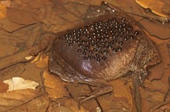

Suriname Toad
The Suriname Toad is an aquatic frog that is native to the rivers and swamps of South America. They are generally brown in color and have a flat pancake-like body. Unlike most frogs, Suriname Toads don't lay eggs. Instead, a female frog will carry eggs on her back.
Sources:
San Diego Zoo - Suriname Toad